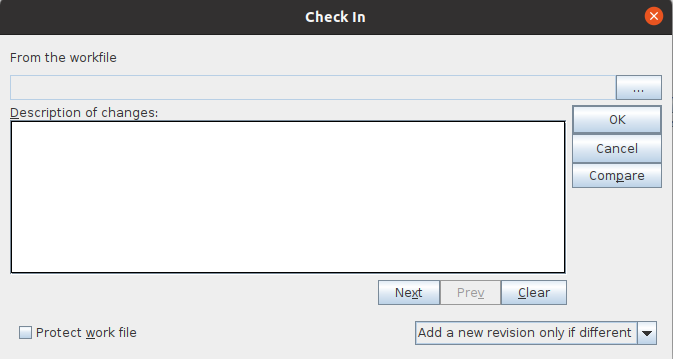

|
QVCS Enterprise Tutorial: Client Application BasicsStoring a RevisionChoose one of the files in your test project, and using a text editor, make some changes to that file, and save the changes. In the client application, select the View/Refresh menu option. You should see that the status of the edited file changed from 'Current' to 'Your copy changed' Now that you've made some edits to your file, you can check them in as a new revision. Select the file and click on the Check-in File toolbar icon. Doing so will bring up the following dialog:  As you can see, you have a number of options as to how you want Enterprise to handle the file you check in, but for now just enter a fitting description of the changes you made and click OK. Enterprise will now create the new revision from the information in the work file. You'll also notice that the file displays a status of "Current." Since your work file created the latest revision, there is no longer any difference between the two. « Previous - » |
| For the source code, see https://github.com/jimv39/qvcsos |